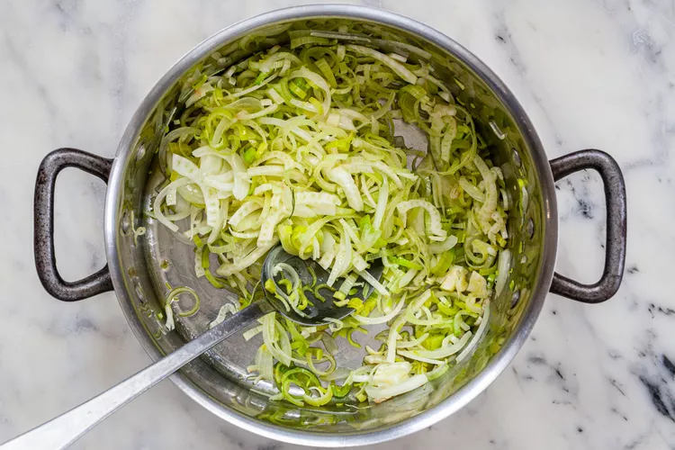
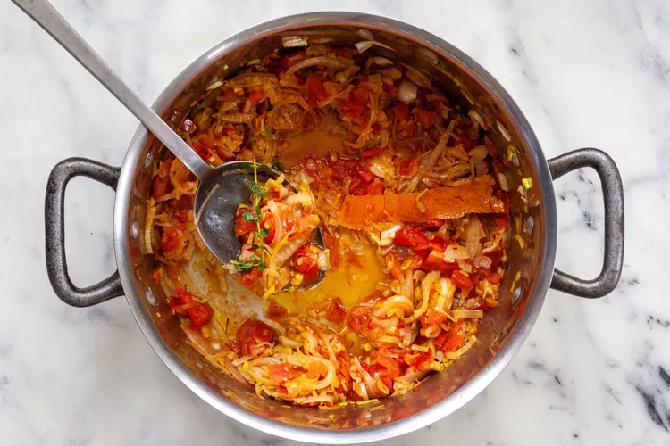
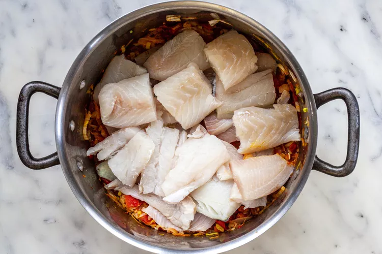
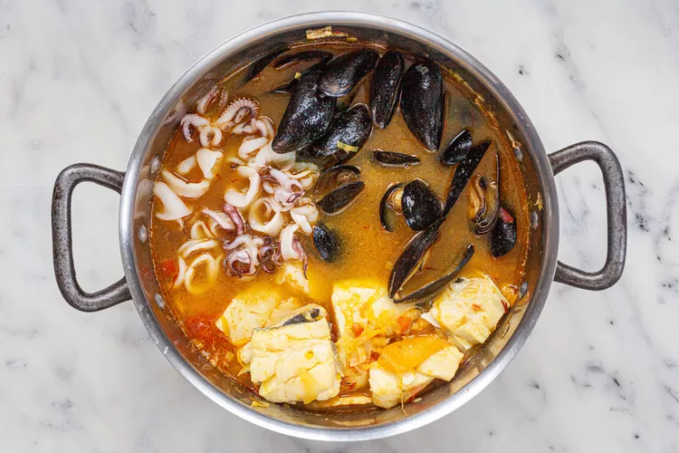

This recipe is by Elise Bauer from Simply Recipes. I am just using the recipe to practice my CSS skills.
Bouillabaisse
Preperation Time
Prep Time
20 min
Cook Time
60 mins
Total Time
80 mins
Servings
6 servings
Ingredients
Sauce Rouille:
1 tablespoon hot fish stock or clam broth
2 cloves garlic, peeled
1 small red hot pepper
1/2 teaspoon salt
1/4 cup soft white bread, pulled into bits
1/2 cup olive oil
Bouillbaisse:
3 pounds of at least 3 different kinds of fish fillets (such as sea bass, red mullet, haddock, halibut, cod, conger, or red porgy), cut into 2-inch pieces
1 pound mussels or clams
1 pound squid or crab
1 cup onions, thinly sliced
2 leeks, white and light green parts only, thinly sliced
1/4 fennel bulb, thinly sliced, or 1 teaspoon fennel seeds
2 cloves of garlic, crushed
3 large tomatoes, roughly chopped
1 bay leaf
3 sprigs fresh thyme
1/2 teaspoon saffron threads
2 teaspoons salt
1 long, wide strip orange zeat
1 cup clam juice or fish stock
1/4 teaspoon freshly ground black pepper
Sliced rustic French bread, plain or toasted
Method
1. Make the sauce rouille:
Put the hot fish stock or clam broth into the bottom of a blender. Add the garlic and red hot pepper, salt and bread. Blend until very smooth. With the blender still running, add olive oil slowly and stop the blending as soon as the oil disappears. Set aside.
2. Cook the onions, leeks, and fennel:
Heat 1/4 cup of olive oil in a large (6-8 quart) pot on medium high heat. When the oil is hot, add the onions, leeks, and fennel. Stir to coat the vegetables with the olive oil. Cook on medium heat until softened but not browned, about 10-15 minutes.

3. Add the garlic, tomatoes, salt, and aromatics
Add the crushed garlic, chopped tomatoes, bay leaf, thyme, saffron, salt, and orange zest.
Cook until the tomatoes are soft and broken down, about 10 more minutes.

4. Add the fish:
Bring 2 cups of water to a boil. Lay the fish pieces over the vegetable mixture and pour over with 2 cups of boiling water. Add clam juice or fish stock. Bring everything to a boil, reduce to a simmer, and cook, uncovered, for about 5 minutes.

5. Add the shellfish:
Add the mussels, squid, and/or crab, pushing aside the fish so that the shellfish is now covered in liquid, and simmer for 10 minutes more, uncovered.
Add freshly ground black pepper, and more salt to taste. Remove the bay leaves, thyme sprigs, and orange zest from the broth.

6. Serve with bread and rouille:
To serve, remove the fish and shellfish to a platter to keep warm. Place a thick slice of crusty French bread (plain or lightly toasted) in each bowl and put a dollop of the rouille sauce on top of the bread.
Ladle the soup broth over the bread, and then portion out fish and shellfish onto the bowls.